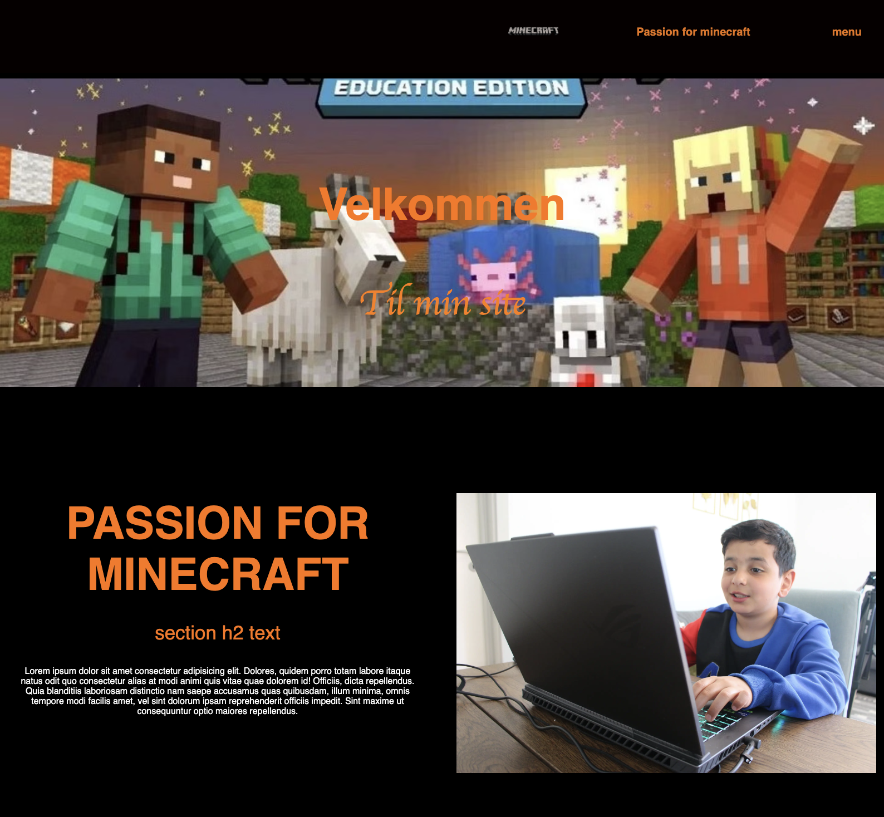

INTERVIEW
Min 9-årige søn er helt vild med Minecraft: Education Edition. For ham er det mere end bare et computerspil; det er en sjov måde at lære på. Han har bygget alt fra historiske monumenter til komplekse matematiske modeller, og han bruger spillet til at løse problemer og arbejde sammen med andre. At se ham dykke ned i Minecraft: Education Edition får mig virkelig til at forstå, hvordan spil kan være en kraftfuld læringsværktøj.